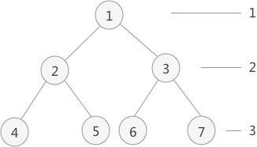

二叉树层次遍历（包含C语言实现代码）
前边介绍了二叉树的先序、中序和后序的遍历算法，运用了栈的数据结构，主要思想就是按照先左子树后右子树的顺序依次遍历树中各个结点。
本节介绍另外一种遍历方式：按照二叉树中的层次从左到右依次遍历每层中的结点。具体的实现思路是：通过使用队列的数据结构，从树的根结点开始，依次将其左孩子和右孩子入队。而后每次队列中一个结点出队，都将其左孩子和右孩子入队，直到树中所有结点都出队，出队结点的先后顺序就是层次遍历的最终结果。
本节介绍另外一种遍历方式：按照二叉树中的层次从左到右依次遍历每层中的结点。具体的实现思路是：通过使用队列的数据结构，从树的根结点开始，依次将其左孩子和右孩子入队。而后每次队列中一个结点出队，都将其左孩子和右孩子入队，直到树中所有结点都出队，出队结点的先后顺序就是层次遍历的最终结果。

图1 二叉树
图1 二叉树
层次遍历的实现过程
例如，层次遍历图 1 中的二叉树：- 首先，根结点 1 入队；
- 根结点 1 出队，出队的同时，将左孩子 2 和右孩子 3 分别入队；
- 队头结点 2 出队，出队的同时，将结点 2 的左孩子 4 和右孩子 5 依次入队；
- 队头结点 3 出队，出队的同时，将结点 3 的左孩子 6 和右孩子 7 依次入队；
- 不断地循环，直至队列内为空。
实现代码
#include <stdio.h>
#define TElemType int
//初始化队头和队尾指针开始时都为0
int front=0,rear=0;
typedef struct BiTNode{
TElemType data;//数据域
struct BiTNode *lchild,*rchild;//左右孩子指针
}BiTNode,*BiTree;
void CreateBiTree(BiTree *T){
*T=(BiTNode*)malloc(sizeof(BiTNode));
(*T)->data=1;
(*T)->lchild=(BiTNode*)malloc(sizeof(BiTNode));
(*T)->rchild=(BiTNode*)malloc(sizeof(BiTNode));
(*T)->lchild->data=2;
(*T)->lchild->lchild=(BiTNode*)malloc(sizeof(BiTNode));
(*T)->lchild->rchild=(BiTNode*)malloc(sizeof(BiTNode));
(*T)->lchild->rchild->data=5;
(*T)->lchild->rchild->lchild=NULL;
(*T)->lchild->rchild->rchild=NULL;
(*T)->rchild->data=3;
(*T)->rchild->lchild=(BiTNode*)malloc(sizeof(BiTNode));
(*T)->rchild->lchild->data=6;
(*T)->rchild->lchild->lchild=NULL;
(*T)->rchild->lchild->rchild=NULL;
(*T)->rchild->rchild=(BiTNode*)malloc(sizeof(BiTNode));
(*T)->rchild->rchild->data=7;
(*T)->rchild->rchild->lchild=NULL;
(*T)->rchild->rchild->rchild=NULL;
(*T)->lchild->lchild->data=4;
(*T)->lchild->lchild->lchild=NULL;
(*T)->lchild->lchild->rchild=NULL;
}
//入队函数
void EnQueue(BiTree *a,BiTree node){
a[rear++]=node;
}
//出队函数
BiTNode* DeQueue(BiTNode** a){
return a[front++];
}
//输出函数
void displayNode(BiTree node){
printf("%d ",node->data);
}
int main() {
BiTree tree;
//初始化二叉树
CreateBiTree(&tree);
BiTNode * p;
//采用顺序队列，初始化创建队列数组
BiTree a[20];
//根结点入队
EnQueue(a, tree);
//当队头和队尾相等时，表示队列为空
while(front<rear) {
//队头结点出队
p=DeQueue(a);
displayNode(p);
//将队头结点的左右孩子依次入队
if (p->lchild!=NULL) {
EnQueue(a, p->lchild);
}
if (p->rchild!=NULL) {
EnQueue(a, p->rchild);
}
}
return 0;
}
运行结果：
1 2 3 4 5 6 7
关注公众号「站长严长生」，在手机上阅读所有教程，随时随地都能学习。内含一款搜索神器，免费下载全网书籍和视频。

微信扫码关注公众号